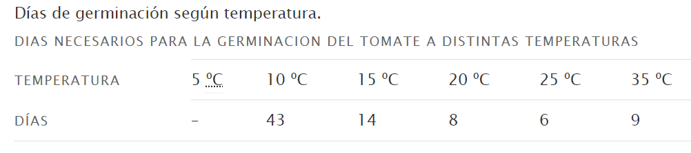
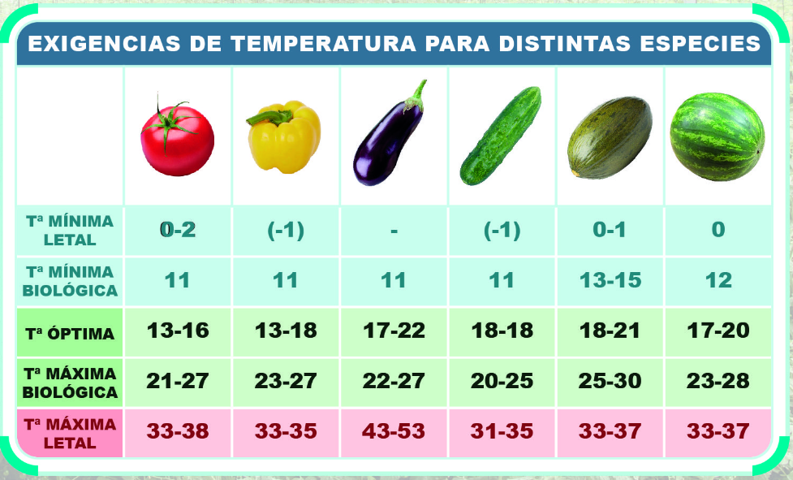

FA_UD2_Características del clima y microclima
FUNDAMENTOS AGRONÓMICOS
UD 2
CARACTERÍSTICAS DEL CLIMA Y MICROCLIMA
ELEMENTOS CLIMÁTICOS
La temperatura
El sol lo consideramos como el motor del tiempo, ya que es la fuente de energía que pone en marcha los procesos meteorológicos. Éstos empiezan con el calentamiento del aire que provoca su movimiento y su variación en su retención del agua. La variación de la temperatura del aire depende de la latitud, de la altitud y de la mayor o menos cercanía al mar. La temperatura la medimos en grados centígrados (ºC).
La temperatura disminuye con la altura. La distribución geográfica de la temperatura depende de la latitud, ya que determina la cantidad de insolación terrestre que recibe un territorio. En el ecuador se recibe mayor insolación (mayor temperatura) porque inciden perpendicularmente los rayos del sol. Los días y las noches tienen casi la misma duración y las variaciones de las temperaturas entre el día y la noche y entre las estaciones son pequeñas. A medida que nos acercamos a los polos las amplitudes térmicas, tanto diurna como anual (diferencia entre la media del mes más cálido y la media del mes más frío) son mayores.
Los rayos del sol calientan por igual la tierra y el mar. Sin embargo el mar se enfría y se calienta más lentamente que la tierra, por lo que si la tierra está fría (en invierno), el mar está más caliente, y si está más caliente (verano), el mar está más fresco. Esto suaviza mucho las temperaturas de los lugares cercanos al mar.
La temperatura media es uno de los principales parámetros climáticos. La media anual se calcula a partir de los valores medios diarios, obtenidos de la temperaturas máximas (días) y mínimas (noche). La tendencia de la distribución de las temperaturas medias anuales es aumentar desde el interior hacia la costa y del norte al sur.
ACCIÓN DE LA TEMPERATURA SOBRE LA VEGETACIÓN
La temperatura ejerce una influencia decisiva en muchos procesos fisiológicos de las plantas como la fotosíntesis, la respiración, etc. Todos estos procesos no se producen cuando la temperatura está por debajo de un valor mínimo o por encima de un valor máximo, si se sobrepasan estos valores pueden producirse daños más o menos graves en distintos órganos del vegetal. En función de cada tipo de planta se puede hablar de:
-
Temperatura base o umbral térmico inferior o cero de vegetación: es la temperatura a la cual el desarrollo se detiene debido al frío. A medida que la temperatura aumenta por encima de la temperatura base, el desarrollo se acelera hasta que se alcanza la temperatura óptima.
-
Temperatura máxima o umbral superior: aquella temperatura por encima de cual la planta detiene su desarrollo o este es muy lento. **
-
Temperaturas óptimas: son los valores térmicos que aseguran la velocidad potencial de crecimiento máxima. En general, está situado entre los 25 y 28ºC para la gran parte de nuestras plantas, pero puede llegar a los 30ºC para plantas procedentes de zonas más cálidas como el maíz.
-
Temperaturas letales: son las temperaturas más bajas y más elevadas que puede soportar una determina punto de marchitez planta. Así, temperaturas bajas que dejen el suelo cubierto de una capa de hielo impide la respiración de las plantas. Por otro lado, la mayor parte de las plantas cultivadas de la zona templada no resisten temperaturas superiores a los 50ºC.
-
Integral térmica: es el estudio y cálculo de la relación entre la aparición de las diferentes fases del desarrollo de las plantas y la evolución de las temperaturas. Las temperaturas elevadas hacen que la planta pase más rápidamente por las fases de su desarrollo.***
{width=50%}
{width=50%}
TEMPERATURAS ELEVADAS
Por lo general temperaturas superiores a 35-40 ºC suelen ser perjudiciales para la mayoría de las plantas, pero como ya hemos visto eso va estar condicionado por la especie vegetal en cuestión que tendrá una temperatura óptima de crecimiento. Podemos hablar de:
-
Punto de marchitez: Si por el exceso de calor el contenido de humedad del suelo baja progresivamente, las plantas encontrarán cada vez mayores dificultades para absorber agua, llegando a un punto que se iniciarán los procesos de marchitez. Si estos procesos pueden ser recuperables con nuevos aportes de agua, estamos ante una marchitez temporal, y si no hay recuperación decimos que se ha alcanzado el punto de marchitez. *
-
Golpe de calor: Cuando las temperaturas sufren una subida drástica y en poco tiempo, ocasionan en los vegetales un exceso de transpiración que no es compensado con la absorción de agua por las raíces ni por los mecanismos de ascensión de savia. No llega a provocar marchitez pero sí que ocasiona trastornos importantes en yemas, hojas y frutos en vías de maduración, causando graves pérdidas en la agricultura.
ACCIÓN DEL FRÍO. EFECTO ESTIMULADOR
Hasta ahora hemos planteado que para un crecimiento de las plantas necesitamos que las temperaturas sean altas, pero la acumulación de horas de frío también ayuda a las plantas a salir de su letargo, es como un indicador que tienen un preaviso de cuando pueden empezar a emerger.
- Horas-frío:
La acción del frío se manifiesta sobre los letargos de las yemas o semillas, permitiendo que después de recibir un número de horas de refrigeración o bajas temperaturas puedan brotar o germinar. Las horas de frío se acumulan y después de sumar un número de horas de frío determinado, dependiendo de cada especie, se produce la salida del letargo de las semillas o de los brotes. El frío destruye de ciertas hormonas que inhiben el crecimiento de las plantas.
Las temperaturas que producen el efecto estimulador son normalmente, bajas, pero siempre superiores a los cero grados centígrados. Cada especie vegetal e incluso variedad tienen sus propias temperaturas que les estimula. En las zonas templadas como la nuestra se admite que las temperaturas medias suelen estar comprendidas entre 3 y 7ºC.
En la siguiente tabla podemos apreciar algunas especies:
| FRUTALES DE HOJA CADUCA | NÚMERO DE HORAS DE FRIO |
|---|---|
| Variedades de Manzano | 800 – 1.000 horas |
| Albaricoquero | 500 – 800 horas |
| Cerezo-Avellano-Nogal | 700 horas |
| Almendro | 100 – 500 horas |
| Table:Número de horas de frío de árboles frutales |
BAJAS TEMPERATURAS. HELADAS.
Consideramos bajas temperaturas aquellas que se encuentran por debajo del óptimo de actividad de la planta dependiendo del estado fisiológico en que se encuentre.
Los efectos más perjudiciales de las bajas temperaturas son:
- Reducción de la actividad metabólica de las plantas, al reducirse la temperatura disminuye la energía calórica lo que produce un ralentizamiento de las reacciones bioquímicas en la planta. Esta disminución de velocidad influye en la fotosíntesis, la respiración, la absorción de nutrientes, etc.
- La formación de cristales de hielo por la solidificación del agua, produce daños en los órganos y tejidos celulares ya que las plantas como la mayoría de los seres vivos tienen un alto contenido de agua en su composición:
- Se pueden romper las membranas de las células de las plantas por la formación de hielo.
- Si se produce una repentina subida de temperatura después de una helada, se puede producir una gran evaporación de agua hacia la atmósfera, que hace deshidratarse a las células.

Presión
Otro elemento determinantes para determinar la climatología de una zona es la presión atmosférica. La presión atmosférica es el peso de la masa de aire por cada unidad de superficie. Hay dos parámetros que influyen en el aumento o disminución de la presión:
-
La altura: la presión disminuye a medida que aumenta la altitud. En igualdad de condiciones habrá más presión en las partes bajas de una montaña que en las altas.
-
La temperatura: la distinta distribución de las radiaciones solares provoca un calentamiento zonal de la superficie terrestre con variaciones de presión.
¿Y por qué influye la presión sobre el clima? Pues porque las diferencias de presión atmosférica entre distintos puntos de la corteza terrestre hacen que el aire se desplace de un lugar a otro, originando los vientos.
La presión atmosférica a nivel del mar (altitud 0) es de 1.013 mb. Las zonas donde la presión es superior a esta cifra las denominaremos zonas de altas presiones, y en ellas se dan los climas secos y las zonas donde las presiones son inferiores, serán zonas de bajas presiones con climas húmedos.
Si unimos los puntos de igual presión en un mapa por medio de una línea (isobaras), tendremos una representación de las presiones atmosféricas de una zona, son los "campos de presiones". En estos mapas las zonas con más bajas presiones se representan con una (B) y las llamamos depresiones o borrascas y las zonas de altas presiones las representamos con una (A) y las llamamos anticiclones.
Las borrascas están formadas por masa de aire frío y los anticiclones por masa de aire caliente, la alternancia de borrascas y anticiclones nos marcan los distintos tipos de tiempo. El descenso de la presión es síntoma de mal tiempo y el ascenso de tiempo despejado.
Humedad atmosféricas
El tercer factor que vamos a estudiar como condicionante fundamental del clima es la humedad atmosférica.
La humedad atmosférica nos va a indicar la cantidad de vapor de agua presente en el aire. Al vapor de agua lo podríamos considerar como un gas invisible que forma parte de la atmósfera.
Normalmente cuándo se habla de humedad atmosférica hablamos en términos de humedad relativa. La humedad relativa se expresa en forma de tanto por ciento (%) de agua en el aire. El 0 % de humedad significa que no hay vapor de agua, el 100% de humedad significa que existe tal cantidad de vapor de agua en la atmósfera que el aire no puede contener más, se dice que está saturado, el agua líquida que hubiera en ese momento en la atmósfera no puede evaporarse por lo que se forman minúsculas gotitas que mojan el suelo o forman gotitas de niebla.
La humedad relativa aumenta al disminuir la temperatura, por lo que los valores mayores de humedad relativa se dan durante el invierno y los más bajos en verano, esta diferencia estacional es más acentuada en las zonas interiores de la Península pues en las zonas costeras la humedad suele permanecer alta durante todo el año.
La humedad relativa suele variar entre el 20% en los días extremadamente secos y el 100 % en los días de niebla o lluvia continua. La saturación es el punto a partir del cual una cantidad de vapor de agua no puede seguir creciendo y mantenerse en estado gaseoso, sino que se convierte en líquido y se precipita.